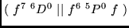

This case illustrates the finding of a CFP value, using the SLS program. This may be useful for programs that are based on the tables of CFP, which are much more extended than the tables of RCFP. The values of CFP are found by programming the expression (7).
The value of a CFP

is found in the example. We see from Nielson and Koster [18]
that the value of this CFP is equal to
See [6,10] for details of the encoding of the f - shell terms. See P4 [6] for a more extensive use of the tables of RCFP in finding the CFP. In that paper, also the problems related to that task are discussed and the ways to solve these are indicated.